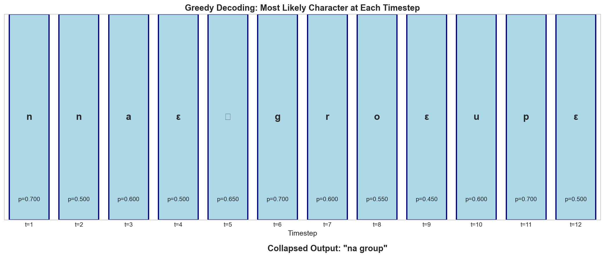

An alignment is a mapping from each input timestep to a character (or blank). For target "na group" with T=12 timesteps, we could have many valid alignments:
flowchart TB
subgraph Valid["✅ Valid Alignments → 'na group'"]
V1["[n, n, a, ε, ␣, g, r, o, ε, u, p, ε]"]
V2["[ε, n, a, ε, ␣, g, r, o, u, u, p, ε]"]
V3["[n, a, ε, ε, ␣, g, r, o, o, u, p, p]"]
end
subgraph Invalid["❌ Invalid Alignments"]
I1["[n, a, ␣, g, r, o, u, p, x, x, x, x] — wrong chars"]
I2["[n, n, a, ␣, g, r, o, u, p, p, p, p] — missing ε between repeated p"]
end
style Valid fill:#e8f5e9,stroke:#4caf50,stroke-width:2px
style Invalid fill:#ffebee,stroke:#f44336,stroke-width:2px
The Blank Token (ε) Rules
The blank token ε serves two purposes:
Handling silence/transitions: Model can output ε when "between" characters
Separating repeated characters: Required between identical consecutive characters
Key Rule: To get repeated characters in output (like "ll" in "hello"), we MUST have ε between them:
[h, e, l, l, o] collapses to "helo" ❌
[h, e, l, ε, l, o] collapses to "hello" ✅
Collapsing Function B
The function B maps alignments to outputs by:
Merging consecutive repeated characters
Removing all ε tokens
B([n, n, a, ε, ␣, g, r, o, ε, u, p, ε])="na group"
Step-by-step collapsing example:
Input alignment: [n, n, a, ε, ␣, g, r, o, ε, u, p, ε]
↓
Step 1 - Merge: [n, a, ε, ␣, g, r, o, ε, u, p, ε] (merged n,n → n)
↓
Step 2 - Remove ε: [n, a, ␣, g, r, o, u, p]
↓
Final output: "na group"
4. Extended Sequence Z
To apply the forward algorithm, we create an extended sequenceZ by inserting ε between each character and at the boundaries:
Y=[n,a,␣,g,r,o,u,p](8 characters)
Z=[ϵ,n,ϵ,a,ϵ,␣,ϵ,g,ϵ,r,ϵ,o,ϵ,u,ϵ,p,ϵ](17 states)
flowchart LR
subgraph Y["Target Y (8 chars)"]
Y1["n"] --> Y2["a"] --> Y3["␣"] --> Y4["g"] --> Y5["r"] --> Y6["o"] --> Y7["u"] --> Y8["p"]
end
subgraph Z["Extended Z (17 states)"]
Z1["ε"] --> Z2["n"] --> Z3["ε"] --> Z4["a"] --> Z5["ε"] --> Z6["␣"] --> Z7["ε"] --> Z8["g"] --> Z9["ε"] --> Z10["r"] --> Z11["ε"] --> Z12["o"] --> Z13["ε"] --> Z14["u"] --> Z15["ε"] --> Z16["p"] --> Z17["ε"]
end
Y --> |"Insert ε"| Z
style Y fill:#fff3e0,stroke:#ff9800
style Z fill:#e3f2fd,stroke:#2196f3
State indexing (1-based):
State s
1
2
3
4
5
6
7
8
9
10
11
12
13
14
15
16
17
zs
ε
n
ε
a
ε
␣
ε
g
ε
r
ε
o
ε
u
ε
p
ε
5. Forward Algorithm (α Computation)
The forward variableαs,t represents the total probability of all valid alignments that:
End at state s in the extended sequence Z
After processing t input timesteps
[!IMPORTANT] > Don't confuse P and α!
P(c∣t) = RNN output probability of character c at timestep t (given in the probability matrix)
αs,t = probability of being in state s of Z after t timesteps with a valid alignment path
At t=1, we have only consumed ONE timestep, so we can only be at the BEGINNING of Z (state 1 or 2). We cannot "jump" to state 4 (a) at t=1 because reaching state 4 requires first passing through states 1→2 or 1→2→3, which takes time!
5.1 Initialization (t = 1)
At t=1, only the first two states can have non-zero probability because:
We must start at the beginning of the extended sequence Z
State 1 (ε) = we start with blank
State 2 (n) = we start with the first character
We cannot be in state 3+ at t=1 because reaching those states requires transitioning through earlier states, which takes additional timesteps.
α1,1=P(ϵ∣t=1)=0.074
α2,1=P(n∣t=1)=0.700
αs,1=0for s>2(no valid path can reach here in just 1 timestep)
The total probability of the target sequence given the input is the sum of probabilities ending at the last two valid states (we can end with final character 'p' or with blank ε):
P(Y∣X)=α16,12+α17,12
P(Y∣X)=α(p,t=12)+α(ϵ,t=12)
P(Y∣X)=0.000458+0.005024=0.005482
CTC Loss
LCTC=−logP(Y∣X)=−log(0.005482)=5.206
6. Python Implementation
The complete Python code that generated all calculations:
import numpy as np
import matplotlib.pyplot as plt
import seaborn as sns
# Parameters
target_Y =list("na group")# ['n', 'a', ' ', 'g', 'r', 'o', 'u', 'p']
vocab =['n','a',' ','g','r','o','u','p','ε']
vocab_to_idx ={c: i for i, c inenumerate(vocab)}
T =12# Build extended sequence Z
Z =[]for char in target_Y:
Z.append('ε')
Z.append(char)
Z.append('ε')
S =len(Z)# 17 states# Forward Algorithmdefforward_algorithm(probs, Z, vocab_to_idx):
S, T =len(Z), probs.shape[1]
alpha = np.zeros((S, T))# Initialization
alpha[0,0]= probs[vocab_to_idx[Z[0]],0]
alpha[1,0]= probs[vocab_to_idx[Z[1]],0]# Recurrencefor t inrange(1, T):for s inrange(S):
z_s_idx = vocab_to_idx[Z[s]]if s ==0:
alpha[s, t]= alpha[s, t-1]* probs[z_s_idx, t]elif s ==1:
alpha[s, t]=(alpha[s-1, t-1]+ alpha[s, t-1])* probs[z_s_idx, t]else:if Z[s]=='ε'or Z[s]== Z[s-2]:# Case 1: Cannot skip
alpha[s, t]=(alpha[s-1, t-1]+ alpha[s, t-1])* probs[z_s_idx, t]else:# Case 2: Can skip
alpha[s, t]=(alpha[s-2, t-1]+ alpha[s-1, t-1]+ alpha[s, t-1])* probs[z_s_idx, t]return alpha
# Final probability
P_Y_given_X = alpha[S-2, T-1]+ alpha[S-1, T-1]print(f"P(Y|X) = {P_Y_given_X:.6f}")print(f"CTC Loss = {-np.log(P_Y_given_X):.4f}")
7. Inference: Decoding
After training, we want to find the most likely output Y∗ given input X:
Y∗=YargmaxP(Y∣X)
7.1 Greedy Decoding
The simplest approach: take the most probable character at each timestep:
at∗=cargmaxP(c∣t)
Then collapse the sequence using B.

Result: [n, n, a, ε, ␣, g, r, o, ε, u, p, ε] → "na group" ✅
7.2 Why Greedy Can Fail
Greedy decoding doesn't account for multiple alignments mapping to the same output.
Example of failure:
P([a,a,ϵ])=0.15
P([a,a,a])=0.17
P([b,b,b])=0.20
Greedy picks [b, b, b] → "b", but:
Total P("a") = 0.15 + 0.17 = 0.32 > 0.20
Beam search addresses this by tracking multiple hypotheses.
7.3 Beam Search (Conceptual)
flowchart LR
subgraph T1["t=1"]
direction TB
B11["n: 0.70"]
B12["ε: 0.07"]
B13["a: 0.02"]
end
subgraph T2["t=2"]
direction TB
B21["n: 0.39"]
B22["nε: 0.09"]
B23["na: 0.04"]
B24["ε: 0.01"]
end
subgraph T3["t=3"]
direction TB
B31["na: 0.26"]
B32["n: 0.02"]
B33["naε: 0.02"]
end
subgraph T4["t=4"]
direction TB
B41["na: 0.13"]
B42["naε: 0.07"]
B43["na␣: 0.01"]
end
%% t=1 to t=2 transitions
B11 -->|"+n"| B21
B11 -->|"+ε"| B22
B11 -->|"+a"| B23
B12 -->|"+n"| B21
B12 -->|"+ε"| B24
%% t=2 to t=3 transitions
B21 -->|"+a"| B31
B21 -->|"+ε"| B32
B22 -->|"+a"| B31
B23 -->|"+ε"| B33
%% t=3 to t=4 transitions
B31 -->|"+ε"| B41
B31 -->|"+ε"| B42
B31 -->|"+␣"| B43
B33 -->|"stay"| B42
style T1 fill:#e3f2fd,stroke:#1976d2,stroke-width:2px
style T2 fill:#e8f5e9,stroke:#388e3c,stroke-width:2px
style T3 fill:#fff3e0,stroke:#f57c00,stroke-width:2px
style T4 fill:#fce4ec,stroke:#c2185b,stroke-width:2px
Beam search maintains top-k hypotheses at each step, merging those that collapse to the same prefix.
8. Key Properties of CTC
8.1 Conditional Independence
CTC assumes outputs are conditionally independent given the input:
P(Y∣X)=A∑t=1∏TP(at∣X)
This means the model cannot learn language patterns (e.g., "qu" is always followed by a vowel). Solution: Combine with an external language model.
8.2 Monotonic Alignment
CTC enforces monotonic alignments — we can only move forward through the output sequence.
flowchart LR
A["Allowed: Input → Output moves only forward"]
B["NOT allowed: Reordering (needed for translation)"]
style A fill:#e8f5e9,stroke:#4caf50
style B fill:#ffebee,stroke:#f44336
This makes CTC suitable for speech/handwriting but not for machine translation.
8.3 Output Length Constraint
Since alignments are many-to-one:
∣Y∣≤∣X∣
The output cannot be longer than the input. For "hello" with 2 consecutive 'l's:
∣Y∣≤∣X∣−2(r−1) where r=number of consecutive repeats
9. Summary
flowchart TB
subgraph CTC["CTC Algorithm Summary"]
I["Input: Audio frames X (T timesteps)"]
R["RNN: Produces P(char|t) for each timestep"]
Z["Extended Sequence: Y → Z with ε tokens"]
F["Forward Algorithm: Compute α(s,t) values"]
P["Sum: P(Y|X) = α(S-1,T) + α(S,T)"]
L["Loss: -log P(Y|X)"]
G["Gradient: Backpropagate to train RNN"]
end
I --> R --> Z --> F --> P --> L --> G
style CTC fill:#f5f5f5,stroke:#9e9e9e
Key Formulas:
Component
Formula
Extended sequence
Z=[ϵ,y1,ϵ,y2,…,ϵ,yU,ϵ]
Forward (Case 1)
αs,t=[αs−1,t−1+αs,t−1]⋅P(zs∣t)
Forward (Case 2)
αs,t=[αs−2,t−1+αs−1,t−1+αs,t−1]⋅P(zs∣t)
Total probability
P(Y∣X)=αS−1,T+αS,T
CTC Loss
L=−logP(Y∣X)
📋 Answers to PoC Questions
Variable speech rates (people speak at different speeds) and silence between words make fixed alignment impossible.
The blank token allows the model to output "nothing" during silence and separates repeated characters (e.g., "hello" needs ε between the two 'l's).
17 states: 2×8+1=17 (ε before each char, after last char, and between)
Exponential alignments: For T=100, U=50, there are (50150)≈1040 alignments. Dynamic programming reduces this to O(T×S) = O(12×17)=204 operations in our example.
Generated with Python calculations and visualizations for accuracy.